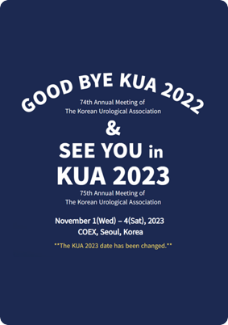

<?php include $_SERVER['DOCUMENT_ROOT']."/inc/meta.html";?>

<body>
  <a href="#main" class="skip">본문 바로가기</a>
  <?php include $_SERVER['DOCUMENT_ROOT']."/inc/header.html";?>
  <main id="main">
    <div class="wrap_com schedule">
      <section class="sec_schedule sec_type1">
        <div class="sec_tit">
          <span class="txt">Becton, Dickinson</span>
          <h2 class="heading">비뇨의학과 학회 주요 일정</h2>
        </div>
        <div class="wrap_list">
          <ul class="list clear">
            <li>
              <a href="schedule-detail.html">
                <div class="box_img ">
                  
                </div>
                <div class="box_txt">
                  <p class="title">The 2nd K-URS International Symposium 및 송년회</p>
                  <span class="date">2022-12-02</span>
                </div>
              </a>
            </li>
            <li>
              <a href="">
                <div class="box_img">
                  
                </div>
                <div class="box_txt">
                  <p class="title">2022년 제10회 대한비뇨생식기통합 기능의학연구회 학술대회</p>
                  <span class="date">2022-12-02</span>
                </div>
              </a>
            </li>
            <li>
              <a href="">
                <div class="box_img">
                  
                </div>
                <div class="box_txt">
                  <p class="title">대한비뇨기종양학회 집담회 및 송년회</p>
                  <span class="date">2022-12-02</span>
                </div>
              </a>
            </li>
          </ul>
          <div class="wrap_btn small">
            <button class="btn_type1">더보기</button>
          </div>
        </div>
      </section>
    </div>
  </main>
  <?php include $_SERVER['DOCUMENT_ROOT']."/inc/footer.html";?>
</body>

</html>
